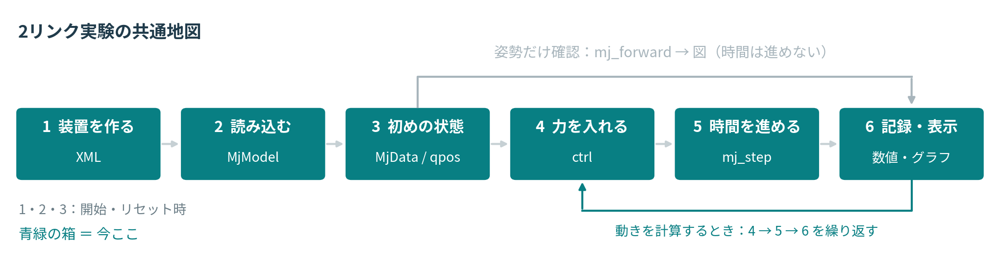

第3回
シミュレーションとMuJoCo
Colab：A 小球篇 / B 2リンクロボット篇（v10）｜PDF：従来版 v6
実習を2冊に分けました。 Aは小球・Euler／RK4・MuJoCoの接触と関節・Terminal。Bは2リンクのモデル作成・姿勢確認・トルクによる運動と、倒立振子への接続です。
それぞれ単独で準備から実行できます。 Aの実行結果やファイルをBへ渡す必要はありません。Googleアカウントで開き、「ドライブにコピー」で自分用を保存してください。以前のコピーは自動更新されません。
Bの各小節では同じ流れ図を表示し、現在の操作を青緑で示します。すべての課題は必修です。2冊を初見180分で終える想定ではなく、授業・課外の配分は担当者の案内に従います。PDFは従来版v6、実習は各Notebookを使ってください。
課題は翌週のPPT発表へ
Notebookの課題と回答を、翌週の授業で説明します。ZIP・CSV・Notebookの提出は不要です。
PPTは全体で4〜5枚が目安。実験の目的・予想、自作した重要なコード、条件付きの図や数値、結果の理由をまとめます。小球篇とロボット篇の両方を扱う場合も1つの発表にまとめます。
未完成の課題は、試したこと・困っている点・次に確認することを説明してください。回答入りNotebookは自分のDriveへ保存し、発表用の図・表・コードをPPTへ貼り付けます。

PDFが表示されない場合は、「PDFを別タブで開く」を選んでください。